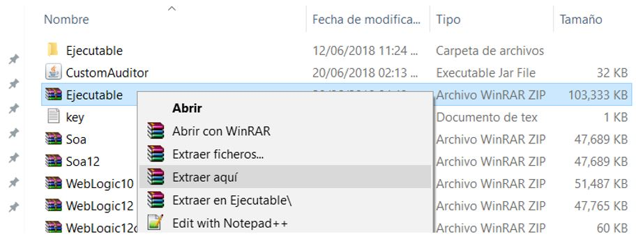
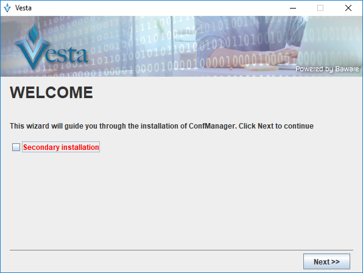
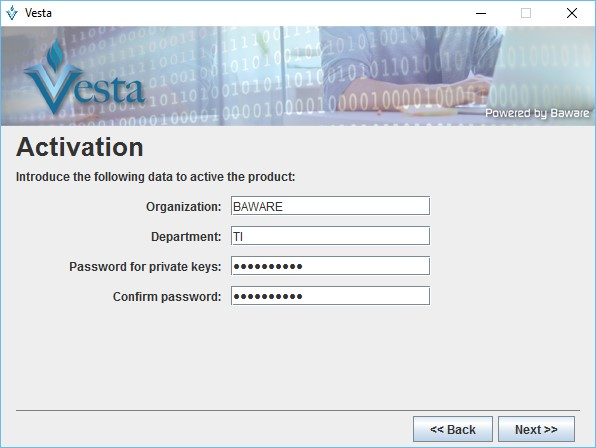
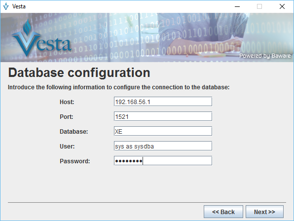
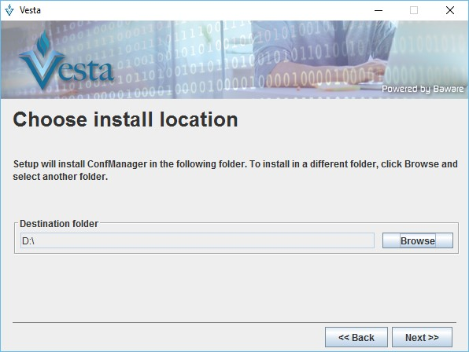
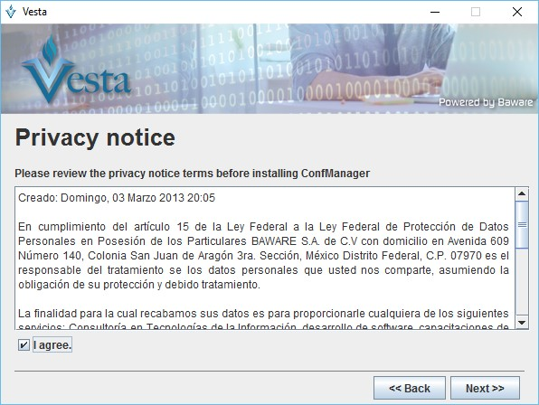
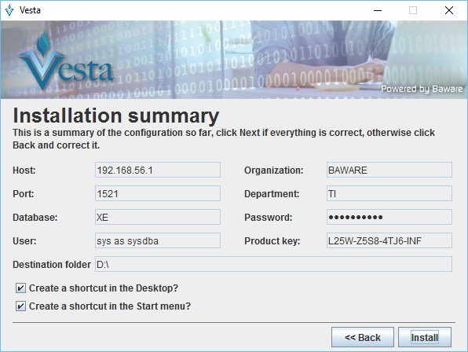
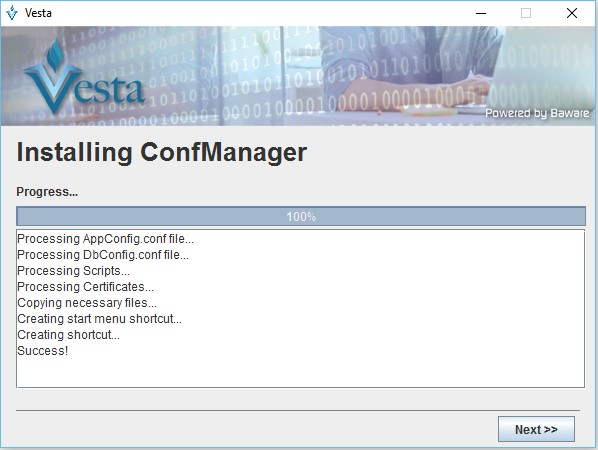
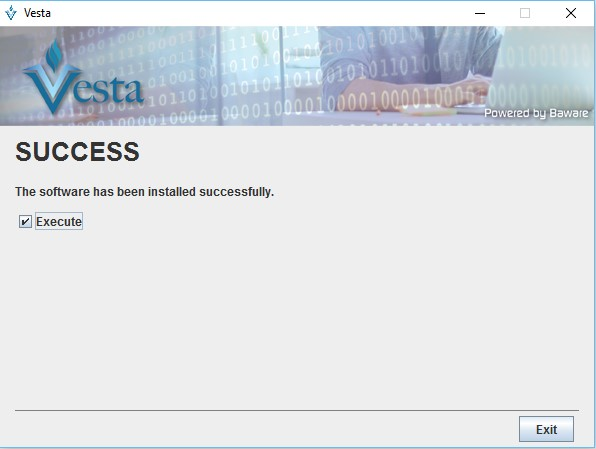

Instalación de Vesta
Para que Vesta pueda funcionar correctamente en el equipo es necesario consultar previamente los requisitos que debe cumplir el sistema.
Requisitos del Sistema
Disponer de un equipo de cómputo para la instalación del producto considerando como mínimo las siguientes características:
Sistema Operativo
- Microsoft Windows: como mínimo Windows XP en adelante o cualquier versión de Linux
- Memoria RAM: 8 GB
- Procesador: Dual core 2 Ghz
- Espacio en disco duro: 350 Mb de la aplicación.
- Oracle JDK y JRE 1.8+ (no compatible con 9 o 10) o bien Oracle Linux 5.0 +, depende del Sistema Operativo con el que se disponga.
- Winrar
Base de Datos
Se debe tener instalado y configurado en el equipo un manejador de base de datos que cumpla con las siguientes características:
-
Versión
- Oracle DataBase 11g (Standalone o RAC)
- Oracle DataBase 12c(Standalone o RAC) Real aplication cluster.
- En caso de ser RAC se deberá disponer del componente SCAN
-
Espacio: 10 GB
- Character Set : AL32UTF8
- SHARED_POOL_SIZE : 147,456 KB
- SGA_MAX_SIZE : 147,456 KB
- DB_BLOCK_SIZE : 8 KB
- session_cached_cursors : 100
- processes : 500
- open_cursors : 800
- db_files : 600
- Usuario: Se deberá disponer de un usuario con permisos de creación de objetos sobre la base de datos.
Nota
Se debe configurar la base de datos previamente ya que los datos seran usados al momento de instalar Vesta.
Aplicación
-
Contar con una licencia para la instalación de Vesta, visite la página oficial para obtener para obtener la aplicación.
-
Disponer de los instaladores de Vesta, provenientes de la página oficial.
Instalación
Una vez que se han cumplido los requisitos previos a la instalación del producto, se procede con la instalación.
1. Descomprimir
Para poder instalar Vesta, se debe obtener el archivo “.zip” proveniente del repositorio oficial del producto. La carpeta contiene los archivos necesarios para el proceso de instalación del producto.
Una vez descargado el archivo se procede a extraerlo:

2. Ejecutar
Con los archivos completos, se procede a instalar Vesta. La pantalla muestra la selección del archivo run.bat o run.sh dependiendo la plataforma de sistema operativo.
Right Click > run.bat > Ejecutar como administrador

Nota
En Microsoft Windows se ejecuta el comando run.bat, si corresponde a Linux ejecutamos run.sh
3. Instalando
Una vez ejecutado el comando, inicia la instalación mostrando la ventana de cmd para iniciar el proceso de Vesta y la ventana con el asistente de instalación.
La primer ventana se deja intacta y se realiza la instalación Primaria (Default) donde el repositorio de metadatos del producto es creado e inicializado.

Click en el botón “Next”
Nota
La ventana del cmd se debe dejar abierta mientras se usa la aplicación Vesta.
Secondary Installation: En este tipo de instalación, el producto es configurado en un repositorio de metadatos existente...2
4. Datos de la organización
En la ventana que se muestra se ingresan los datos de la organización:

-
Organización: Nombre de la organización donde se instalará Vesta.
-
Departamento: Departamento dentro de la organización al cual pertenece la aplicación.
-
Product Key: Clave de la licencia de uso para la aplicación.
Al ingresar la clave del producto automáticamente se valida y si es correcta pide establecer el password de la instalación.
- Password for private keys: Password del usuario admin de la aplicación, servirá para autenticarse por primera vez en la aplicación, además genera las llaves de cifrado para almacenar datos sensibles en Vesta.
Se continua con el asistente de instalación. Click en Next
5. Configuración a la base de datos
En la ventana que se muestra se deben ingresar los datos de acceso a la base de datos para su configuración. La base de datos contendrá el repositorio de metadatos de la aplicación. Los datos ingresados durante el uso de Vesta serán encriptados y almacenados de manera segura por la aplicación.

- Host: IP del servidor de base de datos.
- Port: Puerto de escucha del servidor de base de datos o el listener asociado.
- Database: Nombre de la instancia de base de datos o service name.
- User: Usuario de acceso a la base de datos.
- Password: Contraseña del usuario de base de datos.
Nota
El usuario ingresado en el campo “User” deberá contar con los permisos necesarios para la creación de objetos dentro de la base de datos. Cualquier usuario de base de datos podrá ser utilizado siempre que cumpla con este criterio.
6. Directorio de instalación
En la siguiente pantalla se selecciona el directorio de instalación denominado “VESTA_HOME”. Se podrá elegir la ubicación que mejor sea considerada.

Una vez elegida la ubicación, damos click al botón “Next” para continuar con la instalación.
Nota
Se debe crear previamente la carpeta donde sera instalada la aplicación.
7. Aviso de privacidad
A continuación, se muestra el aviso de privacidad de la aplicación, el cual debe ser aceptado para continuar el proceso de instalación.

8. Resumen de la instalación
Una vez que se cubrió esta parte de la instalación, muestra el resumen de los datos ingresados:

9. Instalación de componentes
Una vez comprobada la información se procede a instalar la aplicación con las configuraciones ingresadas en el asistente de instalación.

Una vez completado el 100 %, damos click al botón Next.
10. Fin de la instalación
Una vez terminado el proceso muestra la ventana de que la aplicación ha sido instalada:

Nota
Durante el proceso de instalación es creado el usuario “admin”. Este usuario es creado automáticamente con los permisos necesarios para operar la aplicación.